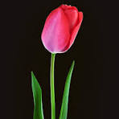

Welcome to the World of Flowers
Discover the beauty and history of the five most popular flowers on Earth
Roses
Roses are considered amongst the most beloved flowers on worldwide. Known for their beauty and fragrance. They have been cultivated for thousands of years and are often associated with love and romance.
Historically, roses have been used in perfumes, medicine, and even as symbols of power and war. The ancient Romans and Greeks admired them greatly, and today they remain one of the most popular flowers for special occasions.
Tulips
Tulips are vibrant and colorful flowers that originated in Central Asia but gained immense popularity in the Netherlands. They symbolize elegance and grace.
In the 17th century, the Netherlands experienced "Tulip Mania," where tulips became so valuable that their bulbs were traded as currency. Today, they are a symbol of spring and renewal.
Lilies
Lilies are known for their large, fragrant blooms and are often associated with purity and devotion. They are frequently used in religious and in ceremonial events.
Throughout history, lilies have been mentioned in mythology and art. The Greeks and Romans linked them to their goddesses, and today they remain a symbol of beauty and tranquility.
Sunflowers
Sunflowers are famous for their bright yellow petals and ability to follow the sun across the sky. They symbolize positivity, happiness, and loyalty.
Native to North America, sunflowers were cultivated by indigenous people for their seeds and oil. Today, they are grown worldwide for decorative and agricultural purposes.
Orchids
Orchids are exotic and diverse flowers that are known for their stunning beauty and intricate shapes. They symbolize love, luxury, and strength.
Orchids have a long history, dating back to ancient Chinese and Greek civilizations. They have been cultivated for centuries and are highly valued for their rarity and elegance.
About Us
FlowerWorld is dedicated to celebrating the beauty and history of flowers. Our mission is to educate and inspire people by sharing fascinating stories about the most beloved flowers on Earth.
With a passion for nature and a love for floral history, our team curates the best information and images to help you appreciate the natural world around us.